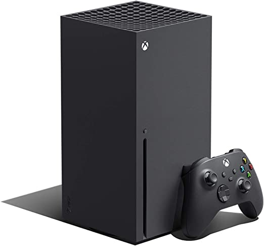

Xbox series X/h1>

Descripción
- La Xbox más rápida y potente de la historia. Juega a miles de títulos de cuatro generaciones de consolas: todos los juegos tienen el mejor aspecto y se juegan mejor en Xbox Series X.
- Modo televisor: la consola Nintendo Switch (modelo OLED) se encaja en la base para jugar en el televisor. El puerto LAN integrado ofrece otra forma de conectarse a internet en el modo televisor.
- Disfruta de una velocidad y rendimiento de nueva generación con Xbox Velocity Architecture, impulsada por un SSD personalizado de 1TB y software integrado
- Con Xbox Smart Delivery, juega a la mejor versión disponible de tu juego sea cual sea la consola que uses.
- 12 teraflops de potencia.
- Juegos en auténtico 4K, preparados para 8K y hasta 120 FPS.
- DirectX Raytraycing.
- Variable Refresh Rate.
Detalles del producto
- Clasificado: Calificación por edades desconocida
- Dimensiones del producto:9.8 x 20.8 x 25.7 cm; 420 gramos
- Fecha de lanzamiento: 10 octubre 2020
- ASIN: B08H93ZRLL
- Número de modelo del producto:1882
- Restricciones de envío: Envío: Este producto se puede enviar a España y a otros países seleccionados.